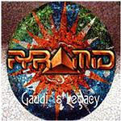

Home Artist links Label link

Pyramid - Gaudi's Legacy
| Artist: | Pyramid |
| Title: | Gaudi's Legacy |
| Label: | Locomotive |
| Length(s): | 66 minutes |
| Year(s) of release: | 2002 |
| Month of review: | [12/2002] |
Sample this album in MP3 or RealAudio
The music
This here album by Spanish band Pyramid is mostly in a prog metal vein. It contains several tracks which aren't all that vocal, but pretty technical on the one hand, and a bunch of tracks which are more vocal, although not necessarily in any way that would please one. The vocals tend to be pretty ok, but have their bad patches.The technical stuff most of the time has its merits, although there are such moments at which one wonders what exactly it was that was intended. What I did enjoy where the Spanish influences is La Pedrera. And there's some more odd bits and pieces which are fun, like the baroque Guell's Dragons, Part II.All 'n all this isn't a bad album. It's not a good one, either, though.
© Roberto Lambooy